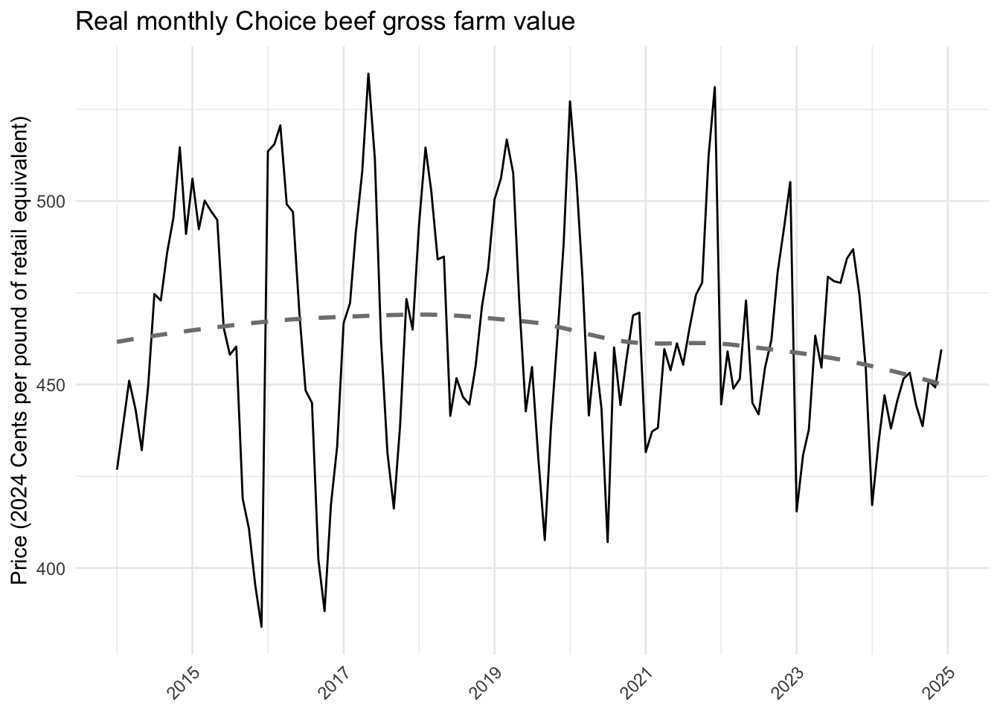
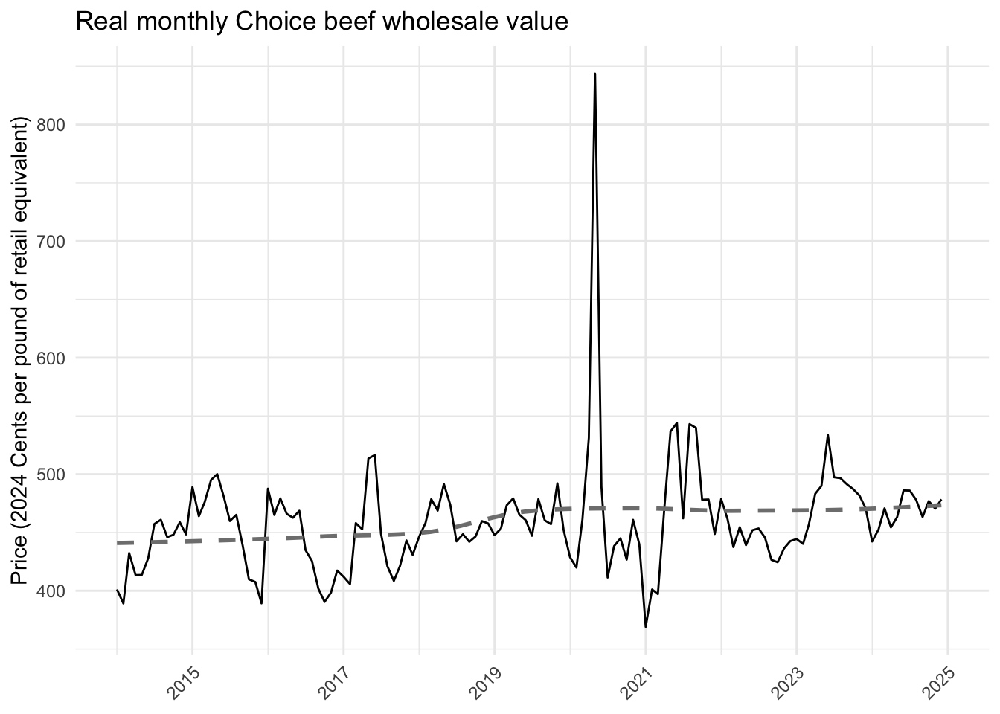
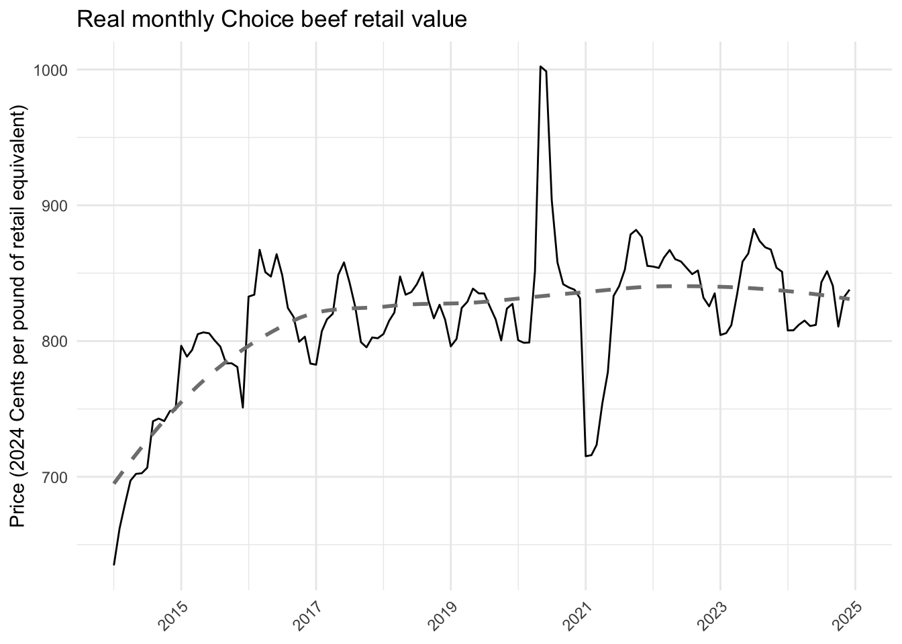

library(tidyverse)
library(openxlsx)
library(readxl)
library(janitor)Final data: Pricing for beef along the supply chain .
Differentiated
ADD
diff_price <- tibble(
supply_chain_location = c(
"Choice beef gross farm value",
"Choice beef retail value",
"Choice beef wholesale value"
),
beef_price_kg = "need data",
organic_beef_price_kg = "need data"
)Commodity
Here we focus on price data for the last 10 years, where available. All prices are reported in 2024 dollars.
Monthly prices along suppy chain
# Import USDA ERS price spread data
df <- read_csv("../data_raw/history.csv") %>%
clean_names()
# Keep beef data since 2014
df <- df %>%
filter(year>=2014 &
str_detect(data_item, "beef"))
# Keep data of interest
df <- df %>%
filter(data_item %in% c(
"Choice beef gross farm value",
"Choice beef wholesale value",
"Choice beef retail value"
))
# Make year-month date
df <- df %>%
mutate(
date = make_date(year, month_number, 1)
)PPI
For prices at the farmgate, we use the producer price index by commodity: Farm products: Slaughter Cattle(“WPU0131.csv”) to put all beef price data in 2024 dollars.
Citation: U.S. Bureau of Labor Statistics, Producer Price Index by Commodity: Farm Products: Slaughter Cattle [WPU0131], retrieved from FRED, Federal Reserve Bank of St. Louis; https://fred.stlouisfed.org/series/WPU0131, August 17, 2026.
For retaila and wholesale prices, we use the Producer Price Index by Commodity: Processed Foods and Feeds: Meats (WPU0221)(“WPU0221.csv”).
Citation: U.S. Bureau of Labor Statistics, Producer Price Index by Commodity: Processed Foods and Feeds: Meats [WPU0221], retrieved from FRED, Federal Reserve Bank of St. Louis; https://fred.stlouisfed.org/series/WPU0221, August 17, 2026.
We compute an average yearly PPI and then use that to convert all dollars into 2024 dollars. We keep data starting in 2014.
# Import producer ppi
producer_ppi <- read_csv("../data_raw/WPU0131.csv") %>%
filter(observation_date>= as.Date("2014-01-01"))
# PPI get average per year
producer_ppi <- producer_ppi %>%
mutate(year = year(observation_date)) %>%
group_by(year) %>%
summarise(ppi = mean(WPU0131, na.rm = TRUE)) %>%
mutate(producer_ppi_index_2024 = ppi[year == 2024] / ppi) %>%
select(-ppi)
# Import retail/wholesale ppi
retail_wholesale_ppi <- read_csv("../data_raw/WPU0221.csv") %>%
filter(observation_date>= as.Date("2014-01-01"))
# PPI get average per year
retail_wholesale_ppi <- retail_wholesale_ppi %>%
mutate(year = year(observation_date)) %>%
group_by(year) %>%
summarise(ppi = mean(WPU0221, na.rm = TRUE)) %>%
mutate(retail_wholesale_ppi_index_2024 = ppi[year == 2024] / ppi) %>%
select(-ppi)
# Join together
ppi <- full_join(producer_ppi, retail_wholesale_ppi)
# Join with data
df <- df %>%
left_join(ppi)
rm(ppi, producer_ppi, retail_wholesale_ppi)
# Covert prices
df <- df %>%
mutate(
real_beef_price_2024dollars = case_when(
data_item=="Choice beef gross farm value" ~ value*producer_ppi_index_2024,
TRUE ~ value*retail_wholesale_ppi_index_2024
)
)Figures
# Choice beef gross farm value
ggplot(df %>%
filter(data_item=="Choice beef gross farm value"),
aes(x = date,
y = real_beef_price_2024dollars)) +
geom_line() +
geom_smooth(method = "loess", se = FALSE, linetype = "dashed", color = "grey50") +
labs(
x = NULL,
y = "Price (2024 Cents per pound of retail equivalent)",
title = "Real monthly Choice beef gross farm value"
) +
scale_x_date(date_breaks = "2 years", date_labels = "%Y",
limits = as.Date(c("2014-01-01", "2024-12-31"))) +
theme_minimal() +
theme(axis.text.x = element_text(angle = 45, hjust = 1))
# Choice beef wholesale value
ggplot(df %>%
filter(data_item=="Choice beef wholesale value"),
aes(x = date,
y = real_beef_price_2024dollars)) +
geom_line() +
geom_smooth(method = "loess", se = FALSE, linetype = "dashed", color = "grey50") +
labs(
x = NULL,
y = "Price (2024 Cents per pound of retail equivalent)",
title = "Real monthly Choice beef wholesale value"
) +
scale_x_date(date_breaks = "2 years", date_labels = "%Y",
limits = as.Date(c("2014-01-01", "2024-12-31"))) +
theme_minimal() +
theme(axis.text.x = element_text(angle = 45, hjust = 1))
# Choice beef retail value
ggplot(df %>%
filter(data_item=="Choice beef retail value"),
aes(x = date,
y = real_beef_price_2024dollars)) +
geom_line() +
geom_smooth(method = "loess", se = FALSE, linetype = "dashed", color = "grey50") +
labs(
x = NULL,
y = "Price (2024 Cents per pound of retail equivalent)",
title = "Real monthly Choice beef retail value"
) +
scale_x_date(date_breaks = "2 years", date_labels = "%Y",
limits = as.Date(c("2014-01-01", "2024-12-31"))) +
theme_minimal() +
theme(axis.text.x = element_text(angle = 45, hjust = 1))
Organic
Using data from the USDA AMS Livestock, Poultry, and Grain Market News, New York Dept of Ag Mrkt News, Feb 5, 2025, we estimate the increased cost of organic beef at the farmgate.
Data are pulled from Slaughter Cattle, Dairy Cows, we use DAIRY COWS - Lean 85-90% (Per Cwt / Actual Wt) as it has the largest sample size. The average price per cwt/actual wt for conventional is 116.98 and for organic is 118.78. Organic is 1.5% higher than conventional. We apply a 1.8% premium on farmgate organic prices.
Retail prices are found from the USDA AMS Livestock, Poultry, & Grain Market News, Weekly Grocery Store Beef Feature Activity, August 14, 2026. We apply the prices differences of conventional to organic to both retail and wholesale. We use the price of ground beef, Ground Beef 80-89%, 1-2 Lbs from the Previous Week (PW).
Conventional: 6.26 USDA Organic, fresh: 6.99
We apply a 11.7% premium on all retail and wholesale organic prices.
# Define how much to inflate prices for organic
organic_farmgate <- (118.78-116.98)/116.98
organic_retail_wholesale <- (6.99-6.26)/6.26
# Define organic price
df <- df %>%
mutate(
organic_real_beef_price_2024dollars =
case_when(
data_item == "Choice beef gross farm value" ~ real_beef_price_2024dollars + (real_beef_price_2024dollars*organic_farmgate),
TRUE ~ real_beef_price_2024dollars + (real_beef_price_2024dollars*organic_retail_wholesale)
)
)Final table
For the model, we include one worksheet with differentiated prices, one with commodity beef prices at each level of the supply chain. These prices are an average of the prices from 2022-2024. All prices are in 2024 dollars.
Convert all prices into $/kg. 1 kg = 2.20462 lb
cents/kg=cents/lb×2.20462
$/kg=100cents/lb×2.20462
# Commodity
sum <- df %>%
filter(year %in% c(2022, 2023, 2024)) %>%
group_by(data_item) %>%
summarise(
beef_price_cents_lb_2024dollars = mean(real_beef_price_2024dollars),
organic_beef_price_cents_lb_2024dollars =
mean(organic_real_beef_price_2024dollars)) %>%
mutate(
beef_price_kg = (beef_price_cents_lb_2024dollars*2.20462) / 100,
organic_beef_price_kg = (organic_beef_price_cents_lb_2024dollars*2.20462) / 100
)
# Keep data of interest
sum <- sum %>%
rename(supply_chain_location = data_item) %>%
select(supply_chain_location,
beef_price_kg, organic_beef_price_kg)
# Create workbook
wb <- createWorkbook()
# Add differentiated
addWorksheet(wb, "differentiated_price")
writeData(wb, "differentiated_price", diff_price)
## Add commodity
addWorksheet(wb, "commodity_price")
writeData(wb, "commodity_price", sum)
# Add info
info <- tibble(
sheet_name = c(
"differentiated_price", "commodity_price"),
sheet_description = c(
"prices along the supply chain for differentiated culled beef",
"average price per kg from 2022-2024 (in 2024 dollars) for Choice beef gross farm value, Choice beef wholesale value, and Choice beef retail value"),
source = c(
"??",
"Meat Price Spreads data from the USDA Economic Research Service, Historical monthly price spread data for beef, pork, broilers (https://www.ers.usda.gov/data-products/meat-price-spreads), we inflate organic prices using USDA AMS Livestock, Poultry, and Grain Market News, New York Dept of Ag Mrkt News, Feb 5, 2025 (https://www.ams.usda.gov/mnreports/ams_3789.pdf) for farmgate prices and Retail prices are found from the USDA AMS Livestock, Poultry, & Grain Market News, Weekly Grocery Store Beef Feature Activity, August 14, 2026(https://www.ams.usda.gov/mnreports/ams_3228.pdf) for wholesale and retail prices")
)
# Add worksheet
addWorksheet(wb, "info")
writeData(wb, "info", info)
# Save workbook
saveWorkbook(wb, "../data_final/beef_price.xlsx",
overwrite = TRUE)